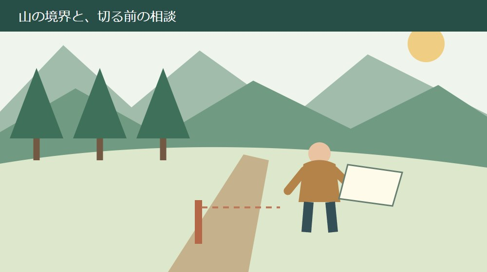
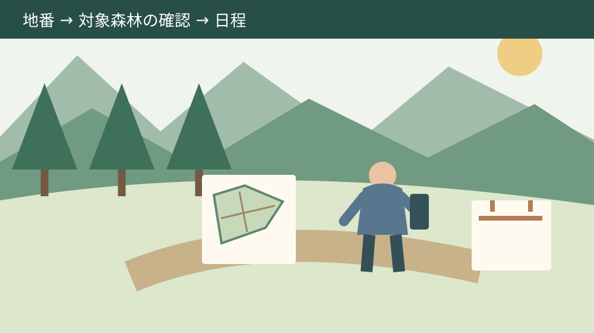

森町の伐採届｜山の木を切る前の確認順
／ 農地・山林・茶畑

Q. 自分の山でも、木を切る前に町へ届けるの？
森町では、保安林を除く地域森林計画対象森林の伐採は、開始日の90～30日前に届出が必要です。保安林や森林以外への利用は手続きが異なります。まず地番を用意し、町の林政係へ対象森林か相談してから、業者と日程・書類を整えます。
山を維持する負担と、切る前の段取りを一緒に考える
森町の山林を持つ家族には、現地への移動、道の確認、業者との連絡、維持費の負担があります。木を切りたいという話の前に、山を見に行く時間を誰がつくってきたかがあります。管理を続ける人へ、書類の説明だけを渡して済ませたくはありません。
この記事は、山林の所有者が業者へ伐採を頼む前に、何を確認するかを整理するものです。対象は静岡県周智郡森町。町が2026年4月15日の回覧で再案内した手続きを、9月17日に原文で確認しました。伐倒作業の技術や安全手順を説明する記事ではありません。
私は大石浩之（磐田市／不動産業）です。ここでは、土地の情報と家族の段取りをそろえる立場から考えます。伐採の可否や個別の届出区分は、町や県の担当が確認する事項です。一般的な期限を知ることと、自分の山に当てはめることを分けます。
今日の一歩は山へ入ることではなく、地番を一つ手元に用意することです。業者の空いている日を先に確定すると、手続きを調べた後に調整が必要になるかもしれません。地番で対象森林かを相談し、必要な日数が分かってから作業日程を組みます。
事実整理｜90～30日前の対象を取り違えない
森町の2026年4月15日回覧1ページは、伐採する森林を、保安林と保安林を除く地域森林計画対象森林に分けています。後者の提出期限は伐採開始日の90日～30日前です。所有地に木が生えているという理由だけで、同じ扱いだとは決められません。
保安林を除く対象森林で案内されている書類名は、「伐採及び伐採後の造林の届出書等」です。届ける先は森林が所在する市町村長です。森町にある森林については、町の担当窓口へ確認を進めます。住んでいる自治体と山がある自治体を混同しないようにします。
保安林は、伐採方法によって届出先と期限が異なると回覧に書かれています。一般の90～30日前という期限を保安林へそのまま当てはめてはいけません。方法がまだ決まっていない場合は、その未定の状態を含めて担当へ相談します。
回覧は、伐採跡地を森林以外にする場合を林地開発として、別の許可または届出が必要だと案内しています。木を切ることと、切った後に土地を何に使うかは、同じ一枚の説明では終わらない場合があるということです。跡地の希望も最初から伝えます。
伐採届を出すことが、土地の所有権や境界を確定することではありません。私は、届けるための準備と、現地で作業してよい範囲の確認を並行して進めることを勧めます。書類上の区分が分かっても、隣地との境が曖昧ならそのまま作業範囲を決めないことです。
地番から始める｜見えている山と書類の土地をつなぐ
地番は、町へ対象森林かを相談するときに、土地を特定するための出発点になります。家の住所や「実家の裏山」という呼び方だけでは、別の人が同じ範囲を見ているか分かりません。手元の課税明細や登記の資料から、所在と地番をそのまま控えます。
資料が複数ある場合は、同じ地番のものをまとめます。登記の地目、面積、名義と、家族が覚えている呼び名を同じ欄へ混ぜないようにします。課税資料だけで所有権や境界を確定せず、食い違いがあれば相談時の確認事項として残します。
町の伐採案内ページは、対象森林の位置を静岡県森林クラウド公開システムで確認できると紹介しています。ただし、画面上の位置確認と現地の境界確認は別です。地番との対応が読み取れないときは、画面だけで対象外と判断せず町へ照会します。
家族に山の場所を知る人がいても、説明を聞くために急斜面へ入る必要はありません。まず安全な場所で、手元の地図に分かる道や入口を書いてもらいます。境界資料の入口は地籍調査と畑・山の境界の記事で整理しています。
良い点｜切る前に、跡地の管理まで話題にできる
伐採前の届出がある良い点は、作業日だけでなく、切った後に山をどう管理するかも先に考えられることだと私は受け止めます。木を切れば管理の話がすべて終わるとは限りません。造林や跡地の使い方を、最初の相談で話せる形にします。
90～30日前という範囲が見えることも、日程を整理する助けになります。「早めに」の一語では、家族と業者で時間の感覚がずれます。一般の対象森林であれば、開始予定日から逆算して書類をそろえる目安を持てます。実際の提出日や変更時の扱いは町に確認します。
回覧の説明が保安林とそれ以外を分けていることは、所有者が自分の判断の限界を知る助けにもなります。知らない区分を無理に選ばず、「この山はどちらか」と尋ねられるからです。最初の相談を完成した申請書の提出だと思わなくてよい、と私は考えます。
業者との話でも、町に確認した事項を共有できれば、見積り条件の食い違いを減らせます。何を切るか、搬出するか、跡地をどうするかが違えば、頼む仕事の範囲も変わります。私が勧めるのは、金額を比べる前に同じ範囲の仕事で見積りを依頼することです。
注文したい点｜届出の一言では、担い手の作業は見えない
届出が必要と分かっても、所有者には資料探し、位置の確認、業者との連絡が残ります。山を引き継いだ家族が町外に住んでいるなら、現地へ行ける日も限られます。私は、相談時に何を持っていくかまで見える案内が、担い手の負担を減らすと考えます。
町の詳細ページには、届出書、伐採計画書、造林計画書、位置図などが載っています。ただし、伐採方法や跡地の用途で必要書類が変わる内容です。すべての様式を印刷してから悩むより、自分の計画で何が必要かを先に担当へ聞くほうが進めやすいはずです。
資料の表記にも注意が要ります。町の詳細ページの本文には「産業課」とあり、2026年4月の回覧と問い合わせ欄は別の課名になっています。ここでは禁止語を避け、係名の「林政係」と電話番号で案内します。町の掲載番号は0538-85-6317です。
私が一番避けたいのは、「業者へ頼んだのだから届出も終わったはず」という空白です。見積りに伐採と書いてあっても、書類作成や提出まで含むかは確認が要ります。今日、業者へ聞く予定のメモに「届出担当」を一行足せば、その空白を小さくできます。
山の維持費を抑える方法として、どこまで伐採するのがよいかは私にも一律には決められません。現地の状態、道、搬出、伐採後の管理で条件が違うからです。安い見積りを急いで選ぶ前に、切る範囲と残す範囲を同じ地図で話せるところまで進めたいと思います。

対案・結論｜町へ相談する前に五つを一枚にする
町へ最初に相談する準備として、私は地番、所有者、切りたい範囲、開始希望、跡地の希望を一枚にする方法を勧めます。これは町の指定様式ではありません。未定の欄を空欄にせず「未定」と書けば、何を教えてもらいたいかが伝わります。
地番と位置図は、同じ土地を指しているか確認します。一筆の全部を切るのか、一部なのかが未定なら、その旨を書きます。伐採面積を家族の記憶だけで確定せず、業者や担当と確認する欄を残します。見た目の広さを正式な面積として書かないことです。
所有者の欄には、土地と立木について誰が権限を持つか、分かる範囲を記録します。家族代表として電話する人と、届出をする人が同じとは限りません。相続や共有の整理が途中なら、済んだことにせず、その状態で必要な資料を聞きます。
伐採の目的は、「管理のために一部を切る」「切った後も森林として扱う」「別の利用を考えている」など、現在の希望を言葉にします。専門用語を無理に選ばず、業者が提案した内容があれば書面を用意します。担当が判断できる材料を増やすためです。
開始希望日は、まだ確定していない日として相談できます。届ける期限を確かめる前に、作業車の手配や前金の支払いまで進める必要はありません。提出に不足があった場合や計画を変える場合の扱いも聞き、予定に無理がないか業者と見直します。
電話では「森町の○○番の山で伐採を検討しています。対象森林や保安林か、先に確認したい」と伝えます。これは相談文の例です。最初から許可を求める一言に縮めず、土地の区分と計画を説明し、次に必要な資料を聞き取ります。
業者との役割分担｜伐採と書類と搬出を別に書く
伐採業者へ依頼する範囲は、現地調査、伐採、搬出、残る枝や材の扱い、書類の対応に分けて確認するのが私の提案です。含まれる作業が違う見積りを金額だけで並べると、後から必要な仕事が抜けていたと分かる場合があります。
町へ書類を出す担当が業者でも、所有者が控えを受け取る方法を決めます。提出予定と提出済みは別の状態です。受け取った控え、町からの連絡、変更の内容を一か所へ保存し、家族代表が交代しても進行状況が分かるようにします。
道を使う条件も、切る木の範囲とは別に確認します。地図で林道らしく見えることと、作業車が通れることは同じではありません。通行や立入りの権限、現地の状況、作業に必要な幅は、業者と関係者に確認する事項として見積り前に挙げます。
伐採方法や跡地利用が変わったときは、その変更を町へ相談する役を決めます。業者と現地で話がまとまっても、届出内容との関係は残ります。日程変更も含めて、何が変わったら誰へ連絡するかを一文にしておくと、所有者の記憶だけに頼らず進められます。
伐採後と相続の届出を、同じ手続きにしない
町の詳細ページは、伐採終了後の森林の状況報告や、造林した場合の完了後の報告も案内しています。着手前の書類を出したら連絡がすべて終わるとは考えないことです。自分の伐採方法で必要な報告と期限を、最初の相談で確認します。
作業が終わった後に必要な資料を知ると、写真や日付を集め直す手間が出ます。私は、作業前に必要な写真や記録を町へ確認してから、業者と保存方法を決めることを勧めます。所有者が危険な現場へ撮影に入る役を引き受ける必要はありません。
森町の森林所有者届出の案内は、新たに所有者となった日から90日以内の提出を説明しています。所有者が変わったことを届ける制度と、これから木を切るための手続きは別です。相続時の入口は山林を相続したときの届出の記事に分けてあります。
森町公式の所有者届出ページでは、2026年4月1日以降の届出から様式が変更される案内も確認できました。過去に家族が保存した様式をそのまま使わず、相談時点で必要な様式を確認します。伐採の相談に来たからといって、所有者変更の手続きが自動で済むわけではありません。
家族に残す記録｜切った場所と残した仕事をつなぐ
家族に残す管理記録は、地番、位置図、業者名、作業日、費用、提出書類の控えを同じ土地ごとにまとめます。伐採した場所だけでなく、今回は作業していない場所も分かるようにします。写真に日付と撮影位置を添えるのは、そのための私の提案です。
見積りの総額と実際に支払った金額が違えば、追加作業の内容も残します。山林の維持費を次に考える家族にとって、金額だけでは理由が読めないからです。補助や公的な整備の話は森林環境譲与税の使い道を扱う記事で確認し、自分の山の作業が対象になるとは決めつけません。
伐採後に残る連絡や管理を、一人に預けたままにしないことも必要だと私は考えます。町外の家族でも、書類の保存や連絡の記録は分担できます。現地に行く人だけが山の担当ではない。今日は控えを共有する家族を一人決めるだけでも前へ進みます。
大石の視点｜業者の日程より先に、対象森林を確かめる
私は、手続きの名前を知っているだけでは山の管理は回らないと考えます。地番を探す人、町へ聞く人、業者へ伝える人が決まって初めて動きます。業者の日程より先に、対象森林を確かめる。この順番は崩さないほうが、担い手の手戻りを減らせます。
土地の管理に関わる立場としては、木を切るかどうかだけで家族の相談を終わらせたくありません。道、境界、作業範囲、切った後の管理がつながっているからです。ただ、資料だけでは現地の状態を判断できません。分からないところを残して相談するほうが、無理な断言より役に立ちます。
森町の山を守ってきた人へ、さらに頑張れと言うだけでは続きません。私は、全部を一人で覚えていなくても次の人へ渡せる記録を増やしたいと思います。作業を増やす提案ではなく、次に同じ説明を繰り返す手間を減らすための、地番と相談記録です。
まとめ｜切る前に、地番を持って一本の電話をする
森町の伐採届は、対象森林の区分を確かめてから期限を当てはめます。保安林を除く地域森林計画対象森林は、伐採開始日の90～30日前が目安となる提出期間です。保安林、森林以外の用途、伐採後の報告は、それぞれ必要な扱いを町へ確認します。
今日は地番を用意し、林政係へ対象森林かを相談する。その結果を業者へ伝えてから、日程と依頼範囲を決めます。制度や様式は変更される場合があるため、最新の町の案内を確認してください。個別の権利や境界の判断は、担当機関や専門家へつなぎます。
よくある質問
森町の伐採届は何日前までに必要ですか？
2026年4月15日の町回覧では、保安林を除く地域森林計画対象森林について、伐採開始日の90～30日前に「伐採及び伐採後の造林の届出書等」を出すと案内しています。保安林は方法により期限や手続きが異なります。自分の土地がどの区分か分からない場合は、地番を用意し、町の林政係へ先に相談します。
業者に頼めば、所有者は何もしなくてよいですか？
伐採を頼むことと、届出や伐採後の報告を誰が行うかは分けて確認します。見積りや契約の前に、書類を作る人、提出する人、町からの連絡を受ける人、完了後の報告担当を業者と決めてください。所有者は地番・伐採範囲・跡地の希望を共有し、手続きの控えを受け取ります。必要書類は町へ確認します。
山林を相続した際の届出を出していれば伐採できますか？
森林の土地の所有者届出と、伐採及び伐採後の造林の届出は別の手続きです。所有者が変わった届出を済ませても、それだけで伐採手続きが済むわけではありません。森町では所有者届出を所有者となった日から90日以内と案内しています。伐採の計画がある場合は、対象森林・伐採方法・開始予定日を改めて町へ相談します。

参考にした公式情報
- 森町「2026年4月15日回覧」1ページ・森林伐採の届出案内（2026年9月17日確認）
- 森町「森林を伐採する時には届出・許可が必要です」・2023年12月1日更新（2026年9月17日確認）
- 森町「森林の土地の所有者届出制度について」（2026年9月17日確認）
最終確認日：2026-09-17。計画・制度・開催状況は変更される場合があります。最新情報は公式窓口へ、個別の法律・登記・保存上の判断は担当機関や専門家へ確認してください。